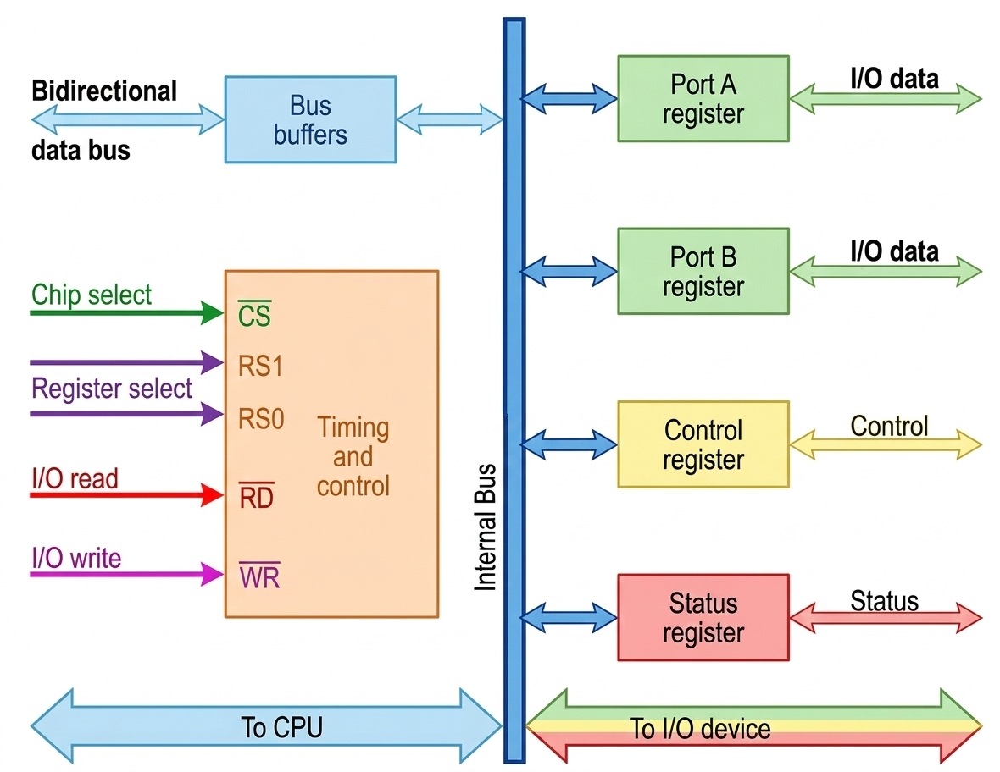

An I/O interface unit acts as a bridge between the CPU and external devices, enabling data transfer and control operations. It consists of registers that communicate with both the CPU and I/O devices.
🎯 Key Concept: The interface registers communicate with the CPU through a bidirectional data bus and interface unit through the chip select and register select inputs.
I/O Interface Units

Port A Register
Handles I/O data transfer
Port B Register
Additional I/O data port
Control Register
Specifies operation mode
Status Register
Tracks device status
Communication Paths
CPU ↔ Interface: Via bidirectional data bus
Interface ↔ Device: Via chip select and register select inputs
Data Direction: Controlled by I/O read and I/O write signals
Four Interface Registers
The interface consists of four registers that can be selected using register select inputs (RS1 and RS0):
CS
RS1
RS0
Register Selected
Function
0
×
×
None (High-impedance)
Data bus is disabled
1
0
0
Port A Register
Primary I/O data port
1
0
1
Port B Register
Secondary I/O data port
1
1
0
Control Register
Defines operation modes
1
1
1
Status Register
Error checking & status info
Register Functions
Data Registers (Port A & B): Transfer data between CPU and I/O device in either direction
Control Register: Receives control information from CPU to specify operation mode (input/output)
Status Register: Contains status bits for error checking, parity errors, and device status indication
I/O Read Operation
CPU sends address
→
Register selected
→
I/O read enabled
→
Data → CPU
The CPU reads data from the selected register via the data bus when the I/O read signal is enabled.
I/O Write Operation
CPU sends address
→
Register selected
→
I/O write enabled
→
CPU → Data
The CPU transfers data into the selected register via the data bus when the I/O write signal is enabled.
💡 Important Note: The common data bus handles both data, control, and status information - the CPU communicates with the interface through this single bus.
Address Decoding
The address bus selects the interface unit through the chip select (CS) input using a decoder circuit. This enables chip select (CS) when the address corresponds to the interface registers.
Two register select inputs (RS1 and RS0) are connected to two address bus lines to select one of four registers.
🎮 Interactive Register Selection Demo
Click buttons to simulate register selection:
Click a button to see register selection details...
Try These Operations:
1. Click "Port A" to simulate selecting the primary data register
2. Click "Control" to see how the CPU would configure the interface
3. Click "Status" to check device status and error conditions
4. Click "CS=0" to disable the interface (high-impedance state)